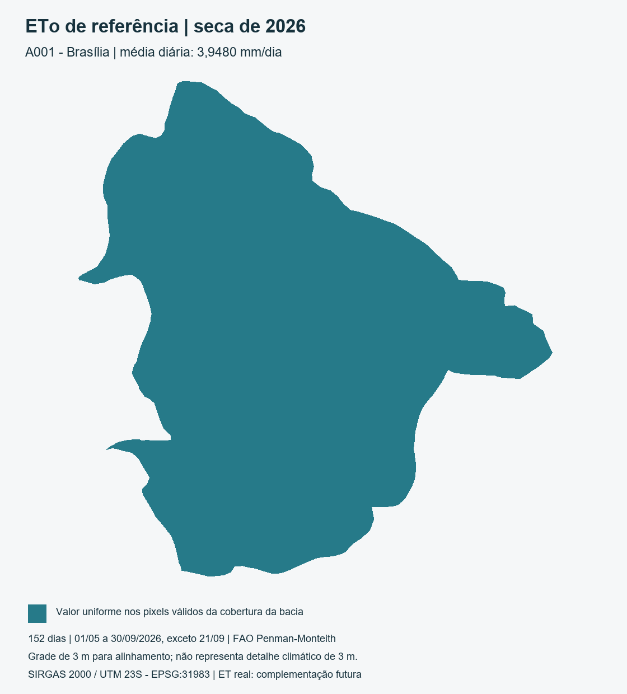

1. Explorar a meteorologia e calcular a ETo
Compare seca e chuva nas quatro estações e consulte o cálculo da evapotranspiração de referência da A001.
Ver procedimento completo, dados e produtos
Caracterizar os períodos e conferir a meteorologia
Seca e chuva nas estações do INMET
Selecione uma estação e uma variável. Cada ponto diário resume observações locais; os gráficos preservam lacunas e identificam a quantidade de dados utilizada.
Carregando observações…
Localizar as quatro estações
A001: fonte de Tref e ETo. A045, A046 e A047 integram a exploração comparativa.
As barras de chuva usam somente dias com 24 intervalos válidos. Uma lacuna não significa ausência de chuva.
As caixas mostram mediana e quartis; a linha tracejada indica a média. São distribuições dos dias observados, não intervalos de confiança.
Linhas: média das leituras válidas de cada hora. Faixas: percentis 25 e 75. O ciclo não representa um dia específico.
Cada ponto utiliza pelo menos 20 pares horários válidos de temperatura e umidade do mesmo dia. Associação não demonstra causalidade.
As faixas do Sankey contam dias por combinação, sem representar deslocamento ou sequência temporal. Como os períodos têm durações diferentes, os detalhes apresentam contagem e percentual dos dias pareados válidos de cada período.
| Período | Temperatura média | Umidade média | Chuva nos dias completos | Dias pareados / esperados |
|---|
Critérios, disponibilidade e dados para consulta
Horário UTC convertido para UTC−03. Temperatura, umidade e vento: pelo menos 20 leituras válidas no dia. Precipitação: soma de 24 intervalos horários válidos, atribuídos à data do intervalo anterior. Temperatura e umidade do Sankey e da dispersão usam as mesmas horas pareadas, com mínimo de 20 pares.
Valores ausentes ou fora dos limites de consistência são mantidos como ausência. Não houve imputação. Os totais de chuva se referem apenas aos dias completos, sem estimar a precipitação das lacunas. Um ciclo observado não constitui normal climatológica.
Baixar série diária e contagens (CSV) · Consultar dados e fontes dos gráficos · Metodologia da exploração.
A exploração compara 01/10/2025–30/04/2026 (212 dias) e 01/05–30/09/2026 (153 dias), nas quatro estações. A comparação com a chuva caracteriza os dados disponíveis; as entradas utilizadas no InVEST representam a seca de 2026.
Os horários são convertidos para UTC−03 antes de agrupar. Temperatura pontual, umidade, orvalho e vento seguem o timestamp local. Precipitação, máximas/mínimas e radiação referentes à hora anterior são atribuídas ao respectivo intervalo; o tratamento concreto depende do produto calculado.
Na exploração, médias diárias de temperatura, umidade e vento exigem pelo menos 20 leituras válidas. Chuva diária exige 24 intervalos válidos. Dispersão e Sankey exigem pelo menos 20 pares T/UR do mesmo dia, calculando as duas médias sobre as mesmas horas. Dados ausentes não são substituídos por zero.
Os boxplots resumem a distribuição entre dias; o perfil horário mostra média e quartis das leituras de cada hora. O Sankey conta dias em combinações de faixas de temperatura e umidade: os cortes são tercis dos dois períodos reunidos por estação, mantidos iguais entre os períodos daquela estação. Mostram-se contagens e percentuais dos dias pareados válidos; não são transições temporais, causalidade ou limiares de risco.
Calcular a ETo diária e produzir o raster de referência

Aplica-se FAO Penman–Monteith diário à A001, antes de qualquer média sazonal. Tmax é a maior máxima horária do dia; Tmin, a menor mínima horária; T = (Tmax + Tmin)/2. Cada leitura de ponto de orvalho é convertida em pressão de vapor antes de calcular a pressão média diária. A pressão atmosférica é estimada pela altitude.
A média escalar de vento na altura nominal de 10 m é convertida para 2 m pelo perfil FAO56. Radiação global observada é convertida de kJ/m² para MJ/m² e usada no saldo de radiação; G = 0 na escala diária. Kc não participa da estimativa meteorológica da ETo: será aplicado separadamente no Urban Cooling.
Equação diária: ETo = [0,408 Δ (Rn − G) + γ (900/(T + 273)) u₂ (es − ea)] / [Δ + γ (1 + 0,34 u₂)]. T é temperatura em °C; Rn e G, energia em MJ/m²/dia; u₂, vento a 2 m em m/s; es e ea, pressões de vapor em kPa; Δ, inclinação da curva de pressão de saturação; γ, constante psicrométrica.
Para a altura nominal de 10 m, u₂ = 0,7479510751679441 × u₁₀. A pressão de vapor de cada leitura de orvalho Td é ea = 0,6108 × exp[17,27 Td/(Td + 237,3)], em kPa; calcula-se depois a média dessas pressões. Latitude, dia do ano e altitude entram nos cálculos de radiação extraterrestre/céu claro e saldo radiativo. Os intermediários diários são preservados na série da ETo.
A execução exige 24 valores válidos das variáveis essenciais e nenhuma lacuna de radiação em intervalo inteiramente diurno. Exclui-se 21/09/2026 por ausência de uma máxima horária. Em 58 dos 152 dias utilizados, pequenas ausências nas bordas solares totalizam 63 intervalos: a soma observada é uma aproximação identificada, sem preenchimento nem afirmação de energia ausente igual a zero.
A média aritmética das 152 estimativas diárias é 3,948045309995122 mm/dia. É uma média diária, não acumulado da seca. A fonte única A001 e a representação uniforme são escolhas da pesquisa. O raster coincide com a grade/máscara da cobertura; os 3 m representam alinhamento cartográfico.
NM 01 · Recorte temporal e comparação seca/chuva
A seca representa maio–setembro/2026; a chuva exploratória, outubro/2025–abril/2026. São períodos observados de um ciclo, com 153 e 212 dias. Apresentar disponibilidade e denominadores; não interpretar a comparação como normal climatológica ou usar contagens brutas como se os períodos tivessem a mesma duração.
NM 03 · Critérios de completude específicos
Exploração: ≥20 leituras por dia e 24 intervalos para chuva; Sankey/dispersão: ≥20 pares T/UR. Tref A001: ≥20 temperaturas/dia e ≥80% em cada janela solar, com 153 datas pareadas efetivas. ETo: 24 valores das variáveis essenciais e tratamento da radiação descrito no procedimento. Não transportar um único critério para todos os produtos; ausências permanecem identificadas.
NM 05 · Fonte única e uniformidade da ETo
A001 e raster uniforme são escolhas metodológicas aceitas. Não foi modelado um gradiente espacial meteorológico de ETo na bacia; grade de 3 m é cartográfica. O valor uniforme cancela em ETI = Kc × ETo / máximo(ETo), resultando em ETI = Kc. A uniformidade não comprova homogeneidade real do clima. A altura do vento de 10 m é nominal da rede, sem conferência da ficha individual de instalação/calibração em 2026.